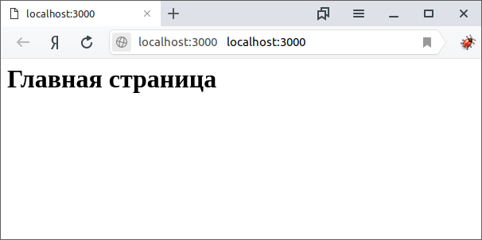
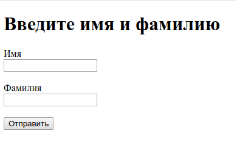

Основы Node и Express
Введение
Node.js - это среда выполнения JavaScript, которая позволяет разработчикам писать бэкэнд (серверные) программы на JavaScript. Node.js поставляется с несколькими встроенными модулями - небольшими независимыми программами, которые помогают облегчить написание серверных приложений. Список четырех основных модулей Node:
- HTTP: модуль, который действует как сервер
- File System: модуль, который читает и изменяет файлы
- Path: модуль для работы с каталогами и путями к файлам
- Assertion Testing: модуль, который проверяет код на соответствие предписанным ограничениям
Express является еще одним модулем, который часто используется с Node, но не входит в него. Express - это фреймворк web-приложений для Node. Express выполняется между созданным Node сервером и фронтендом веб-приложения. Express также обрабатывает маршрутизацию приложения. Маршрутизация направляет пользователей на нужную страницу в зависимости от их взаимодействия с приложением. Хотя существуют альтернативы использованию Express, его простота позволяет легко изучить взаимодействия между бэкэндом, работающим на Node и фронтендом.
Установка фреймворка Express
Для дальнейших действий у вас уже должен быть установлен Node.js. В терминале создайте каталог myapp и сделайте его рабочим.
md myapp
cd myapp
С помощью команды npm init создайте файл package.json.
npm init
Эта команда выдает целый ряд приглашений, например, приглашение указать имя и версию вашего приложения. На данный момент, достаточно просто нажать клавишу ВВОД, чтобы принять предлагаемые значения по умолчанию для большинства пунктов, кроме следующего:
entry point: (index.js)
Введите app.js или любое другое имя главного файла по своему желанию. Если вас устраивает index.js, нажмите клавишу ВВОД, чтобы принять предложенное имя файла по умолчанию.
Теперь установите Express в каталоге myapp:
npm install express
После установки в каталоге myapp будут находится два файла package.json, package-lock.json и каталог node_modules.
Начало работы фреймворка Express
В каталоге myapp создайте файл с именем index.js и скопируйте в него следующий код:
// подключение express
const express = require('express');
// создание объекта app
const app = express();
// для маршрута "/" определяется обработчик
app.get('/', (req, res) => {
// отправка ответа клиенту
res.send('<h1>Главная страница</h1>');
});
// метод listen сообщает вашему серверу, прослушивать порт 3000
app.listen(3000);
Вы создали простейшее приложение Express. Теперь запустите приложение из терминала. Для этого в рабочем каталоге myapp введите следующую команду:
node index
После этого откройте в браузере страницу http://localhost:3000/ и вы увидите заголовок первого уровня "Главная страница".

На запрос, адресованный корневому URL (/), приложение выдает ответ “Главная страница” . Для всех остальных путей ответом будет 404 Not Found, т. е. если вы обратитесь по любому другому адресу, например, http://localhost:3000/contact, то сервер ответит браузеру ошибкой 404 Not Found, а в окне браузера появится сообщение Cannot GET /register
В вышеприведенном коде функция app.get(МАРШРУТ, ОБРАБОТЧИК) сравнивает МАРШРУТ c поступившим от браузера GET-запросом (т. е. URL адресом) и если они совпадают срабатывает ОБРАБОТЧИК - функция, в которой можно задать необходимые действия на запрос (здесь и ниже будут приводится, по-возможности, стрелочные функции). В функции app.get(...) первый аргумент МАРШРУТ - это относительный путь (маршрут) на сервере, который можно задать не только в виде строки, но и в виде регулярного выражения.
req (запрос) и res (ответ) являются теми же объектами, которые предоставляет Node, поэтому можно вызвать req.pipe(), req.on('data', callback) и выполнить любые другие действия, не требующие участия Express.
Добавьте еще один маршрут и соответствующий ему обработчик. Для этого в файле index.js измените код на следующий:
const express = require('express');
const app = express();
app.get('/', (req, res) => {
res.send('<h1>Главная страница</h1>');
});
app.get('/contact', (req, res) => {
res.send('<h1>Контакты</h1>');
});
app.listen(3000);
Теперь сервер сможет обрабатывать два маршрута в приложении: http://localhost:3000/ и http://localhost:3000/contact. Таким образом, можно добавить любое количество маршрутов с соответствующими обработчиками.
Если в браузере перейти по адресу http://localhost:3000/contact, то вы увидите страницу с заголовком первого уровня "Контакты".
Перезапуск сервера Node и обновление страницы браузера
Для того чтобы увидеть результаты изменений необходимо перезапускать сервер Node и обновлять браузер после каждой правки исходного кода.
<a name="restart-node"></a>
Чтобы перезапустить Node нужно:
- остановить приложение – клавиши Ctrl+C;
- вернуться к предыдущей команде в терминале – клавиша Up (стрелка вверх);
- запустить приложение снова – клавиша Enter.
После перезапуска сервера не забудьте обновить страницу браузера.
Для того, чтобы избавится от такой "рутины", можно установить какой-нибудь инструмент, который позволит автоматизировать этот процесс, например:
После установки одного из этих пакетов перезапуск сервера Node и обновление страницы браузера происходит автоматически сразу, после сохранения исходного кода.
Отправка HTML-файла
В предыдущем параграфе на клиентские (браузерные) GET-запросы серверные обработчики выдавали тот или иной HTML текст. В качестве ответа на запрос может быть выдан не только HTML текст, но и файлы, например, изображения, файлы CSS и JavaScript. Для этого в обработчик маршрута app.get('/', ...) нужно поместить метод res.sendFile(path).
Создайте каталог pages, а в нем файл articles.html, в который скопируйте следующий код:
<!DOCTYPE html>
<html>
<head>
<title>Статьи</title>
<meta charset="utf-8" />
</head>
<body>
<h1>Статьи</h1>
</body>
<html></html>
</html>
Затем измените файл index.js:
const express = require('express');
const app = express();
app.get('/', (req, res) => {
res.sendFile(__dirname + '/pages/articles.html');
});
app.listen(3000);
Даный код отправяет файл /pages/articles.html в качестве ответа на GET запрос. Запросом здесь является корневой маршрут /.
Перезапустите Node и в браузере перейдите по адресу http://localhost:3000, вы увидите заголовок первого уровня "Статьи".
Метод sendFile() сообщает браузеру тип файла и в зависимости от типа файла браузер будет знать, как обрабатывать файл. Затем метод прочитает и отправит файл. Путь к файлу path в этом методе должен быть абсолютным. Для вычисления абсолютного пути рекомендуется использовать глобальную переменную Node __dirname:
absolutePath = __dirname + 'relativePath/file.ext';
__dirname возвращает полный путь к текущему каталогу.
Выдача статических ресурсов
HTML сервер обычно имеет один или несколько каталогов, доступных пользователю. В этих каталогах обычно размещаются статические ресурсы, такие как, файлы CSS, JavaScript, изображения. В ответ на запросы пользователя сервер должен уметь предоставлять эти ресурсы. В Express эта функциональность реализуется с помощью функции промежуточной обработки (middleware) express.static(path), где параметр path является абсолютным путем к папке, содержащей ресурсы. middleware должна быть установлена с помощью app.use(path, middlewareFunction). Первый аргумент path является необязательным. Если вы не укажете его, middlewareFunction будет выполнена для всех запросов.
Создадайте в каталоге pages новую html-страницу about.html со следующим содержимым:
<!DOCTYPE html>
<html>
<head>
<title>О сайте</title>
<meta charset="utf-8" />
</head>
<body>
<h1>О сайте</h1>
</body>
<html></html>
</html>
В файле index.js измените код на следующий:
const express = require('express');
const app = express();
app.use(express.static(__dirname + '/pages'));
app.use('/', (req, res) => {
res.send('<h1>Главная страница</h1>');
});
app.listen(3000);
Перезапустите Node и в браузере перейдите по адресу http://localhost:3000/about.html либо http://localhost:3000/articles.html, вы увидите заголовок первого уровня "О сайте" либо "Статьи", соответственно. При переходе по любому другому адресу вы увидите заголовок первого уровня "Главная страница".
Обратите внимание, что в строке запроса не указан каталог pages. Этот каталог указан в функции static(__dirname + "/pages"), которая говорит серверу Node, чтобы тот сопоставлял пользовательские запросы относительно указанной директории по умолчанию. Такой механизм позволяет не только сокращать путь в запросах к файлам, но и изменять маршруты не меняя положение самих файлов в каталогах, например:
const express = require('express');
const app = express();
app.use('/static', express.static(__dirname + '/pages'));
app.use('/', (req, res) => {
res.send('<h1>Главная страница</h1>');
});
app.listen(3000);
Теперь если мы хотим обратиться к файлу about.html или articles.html, необходимо отправить запрос http://localhost:3000/static/about.html или http://localhost:3000/static/articles.html соответственно (хотя, фактически, эти файлы расположены в директории /pages, а директория /static является виртуальной). Любые другие запросы будут выдавать заголовок первого уровня "Главная страница".
Выдача JSON на определенном маршруте
В то время как сервер HTML обслуживает HTML, API обслуживает данные. API REST (REpresentational State Transfer) [1],[2] позволяет обмениваться данными простым способом, без необходимости для клиентов знать какие-либо детали о сервере. Клиенту нужно только знать, где находится ресурс (URL-адрес), и действие, которое он хочет выполнить с этим ресурсом (GET, POST, PUT и т.д.). Так, команда GET используется, когда вы хотите получить некоторую информацию, ничего при этом не изменяя. В наши дни предпочтительным форматом данных для перемещения информации по сети является JSON. Проще говоря, JSON - это удобный способ представления объекта JavaScript в виде строки, поэтому он может быть легко передан.
app.get('/json', (req, res) => {
res.json({
message: 'Hello json',
});
});
Данный код представляет простой API, который отвечает строкой JSON на путь /json. Метод app.get() содержит путь /json и функцию-обработчик маршрута. Внутри обработчика маршрута используется метод res.json(), который передает объект в качестве аргумента. Этот метод закрывает цикл запрос-ответ, возвращая данные. Под капотом, он преобразует допустимый объект JavaScript в строку, затем устанавливает соответствующие заголовки, чтобы сообщить вашему браузеру, что вы формируете JSON, и отправляет данные обратно. Объект имеет обычную структуру {key: data}. Значение data может быть числом, строкой, вложенным объектом или массивом. Значение data также может быть переменной или результатом вызова функции, в этом случае они будут вычислены перед преобразованием в строку.
Теперь измените файл index.js следующим образом:
const express = require('express');
const app = express();
app.use('/static', express.static(__dirname + '/pages'));
app.get('/json', (req, res) => {
res.json({
message: 'Hello json',
});
});
app.use('/', (req, res) => {
res.send('<h1>Главная страница</h1>');
});
app.listen(3000);
В этом коде, чтобы все запросы срабатывали правильно, нужно методы app.NAME(...) располагать именно в такой последовательности. Если вы поменяете очередность, например, app.use("/", ...) расположите выше, чем app.get("/json", ...), то запрос с маршрутом "/json" никогда не сработает. Вместо него будет срабатывать запрос "/".
Использование .env файла
Файл .env - это скрытый файл, который используется для хранения переменных окружения (переменных среды) [1]. Этот файл является секретным, никто, кроме вас, не может получить к нему доступ, и он может быть использован для хранения данных, которые вы хотите сохранить конфиденциальными или скрытыми. Например, можно хранить ключи API из внешних служб или URI базы данных. Вы также можете использовать его для хранения параметров конфигурации. Задав параметры конфигурации, можно изменить поведение вашего приложения, не прибегая к переписыванию некоторого кода.
Переменные окружения в файле .env записываются в формате VAR_NAME=value, где VAR_NAME - имя переменной, а value - значение переменной. Каждую переменную окружения принято записывать с новой строки, например:
PORT=65091
ID=002
Не следует включать файл .env в ваш репозиторий, иначе конфиденциальные данные в этом файле будут доступны всем. Поэтому всегда добавляйте файл .env в список исключений файла .gitignore.
Переменные окружения доступны из приложения как process.env.VAR_NAME. Объект process.env является глобальным объектом Node, а переменные передаются в виде строк. По соглашению все имена переменных должны быть прописными, а слова разделены символом подчеркивания. Файл .env - это шелл файл, поэтому вам не нужно заключать имена или значения в кавычки. Также важно отметить, что при присвоении значений переменным, например VAR_NAME=value, вокруг знака равенства не должно быть пробелов.
Добавте переменную окружения в качестве опции конфигурации. Сохраните переменную MESSAGE_STYLE=uppercase в файле .env. Теперь измените файл index.js следующим образом:
const express = require('express');
const app = express();
app.use('/static', express.static(__dirname + '/pages'));
app.get('/json', (req, res) => {
var msg = 'Hello json';
if (process.env.MESSAGE_STYLE === 'uppercase') {
msg = 'Hello json'.toUpperCase();
}
res.json({ message: msg });
});
app.listen(3000);
В этом коде обработчик маршрута GET /json, преобразует ответ объекта message в верхний регистр если process.env.MESSAGE_STYLE равен uppercase. Ответом будет {"message": "HELLO JSON"}.
Реализация регистратора запроса промежуточного обработчика корневого уровня
Ранее вы познакомились с функцией промежуточной обработки express.static(). Теперь пришло время посмотреть, что такое промежуточный обработчик (middleware), более подробно. Функции промежуточной обработки - это функции, которые принимают 3 аргумента: объект запроса (req), объект ответа (res) и следующую функцию промежуточной обработки в цикле запрос-ответ приложения. Эти функции выполняют некоторый код, который может иметь побочные эффекты для приложения, и обычно добавляют информацию к объектам запроса или ответа. Они также могут завершить цикл, отправив ответ, когда какое-то условие будет выполнено. Если они не отправят ответ, когда они закончат, они начнут выполнение следующей функции в стеке. Это приводит к вызову 3-го аргумента next().
Посмотрите на следующий пример:
var app = express();
app.use((req, res, next) => {
console.log('Время:', Date.now());
next();
});
Здесь, в обработчике маршрута сам маршрут не указан, поэтому функция будет выполнятся при любом запросе. Когда поступает любой запрос с любым маршрутом, функция отображает в консоле количество миллисекунд, прошедших с 1 января 1970 года, а затем выполняет следующую функцию в стеке.
Как вы уже видели в параграфе "Выдача статических ресурсов", для монтирования функции промежуточной обработки на корневом уровне вы можете использовать метод app.use(<mware-function>). В этом случае функция будет выполняться для всех запросов, но вы также можете установить более конкретные условия. Например, если вы хотите, чтобы функция выполнялась только для POST запросов, вы можете использовать app.post(<mware-function>). Аналогичные методы существуют для всех HTTP команд (GET, DELETE, PUT, ...).
app.use((req, res, next) => {
var string = req.method + ' ' + req.path + ' - ' + req.ip;
console.log(string);
next();
});
Для каждого запроса он должен регистрировать в консоли строку следующего формата: method path-ip. Пример будет выглядеть так: GET /json - :: ffff: 127.0.0.1. Обратите внимание, что между методом и путем есть пробел и что тире, разделяющее путь и ip, окружено пробелом с обеих сторон. Вы можете получить метод запроса (HTTP команда), относительный путь маршрута и ip-адрес вызывающего объекта из объекта запроса с помощью req.method, req.path и req.ip соответственно. Не забудьте вызвать next(), когда вы закончите, или ваш сервер застрянет навсегда. Обязательно откройте 'Логи' и посмотрите, что произойдет, когда придет какой-то запрос.
Примечание: Express вычисляет функции в том порядке, в котором они появляются в коде. Это справедливо и для промежуточных обработчиков. Если вы хотите, чтобы он работал для всех маршрутов, он должен быть установлен перед ними.
Связывание промежуточных обработчиков для создания сервера времени
Промежуточные обработчики могут быть смонтированы на определенном маршруте с помощью app.METHOD(path, middlewareFunction). Промежуточные обработчики также могут быть связаны внутри определенного маршрута.
Посмотрите на следующий пример:
const express = require('express');
const app = express();
app.get(
'/now',
(req, res, next) => {
req.time = new Date().toString();
next();
},
(req, res) => {
res.send({
time: req.time,
});
}
);
app.listen(3000);
В маршруте app.get('/now', ...) связаны функции промежуточного обработчика и конечного обработчика. В функцию промежуточного обработчика добавлена функция для вычисления текущего времени new Date().toString(). Конечный обработчик отвечает JSON объектом в виде {"time":"Fri Jan 03 2020 17:45:06 GMT+0300 (GMT+03:00)"}.
Вышеприведенный код можно переписать по-другому:
const express = require('express');
const app = express();
const middleware = (req, res, next) => {
req.time = new Date().toString();
next();
};
app.get('/now', middleware, (req, res) => {
res.send({
time: req.time,
});
});
app.listen(3000);
Здесь зараннее определяется константа middleware, которую удобно использовать для нескольких маршрутов.
Этот подход полезен для разделения серверных операций на более мелкие единицы. Это приводит к лучшей структуре приложения и возможности повторного использования кода в разных местах. Этот подход также можно использовать для выполнения некоторой проверки данных. В каждой точке стека промежуточного обработчика можно заблокировать выполнение текущей цепочки и передать управление функциям, специально предназначенным для обработки ошибок. Или вы можете передать управление следующему соответствующему маршруту, чтобы обрабатывать особые случаи. Мы увидим, как это делается в разделе advanced Express.
Получение входных параметров от клиента с помощью маршрута
При создании API вы должны позволить пользователям сообщать вам, что они хотят получить от вашего сервиса. Например, если клиент запрашивает информацию о пользователе, хранящемся в базе данных, ему нужен способ сообщить вам, какой пользователь его интересует. Один из возможных способов достижения этого результата - использование параметров маршрута. Параметры маршрута называются сегментами URL-адреса, разделенными косыми чертами (/). Каждый сегмент фиксирует значение той части URL-адреса, которая соответствует его положению. Полученное значение можно найти в объекте req.params.
Чтобы получить параметры маршрута из POST запроса, общий формат выглядит следующим образом:
app.post('/:param1/:param2', (req, res) => {
// Доступ к соответствующему ключу объекта req.params
// определен после последней точки
var param1 = req.params.parameter1;
// или используйте деструкцию для получения нескольких параметров
var { param1, param2 } = req.params;
// Отправка объекта req.params в качестве JSON ответа
res.json(req.params);
});
Реальный пример выглядит так
const express = require('express');
const app = express();
app.get('/user/:name', (req, res) => {
const { name } = req.params;
res.json({
user: name,
});
});
app.listen(3000);
Если вы введете в адресную строку браузера, например http://localhost:3000/user/Ivan, то в окне браузера отобразится {"user":"Ivan"}. Таким образом, введенный пользователем параметр находится в req.params.name.
Получение входных параметров от клиента с помощью строки запроса
Другой распространенный способ получения входных данных от клиента - это кодирование данных после пути маршрута с помощью строки запроса (query). Строка запроса отделяется от маршрута вопросительным знаком (?), и включает параметры в виде имя_параметра=значение. Каждый параметр разделен амперсандом (&). Например, в запросе http://localhost:3000/user?id=5&user=Ivan часть id=5&user=Ivan представляет собой строку запроса, состоящую из двух параметров id=5 и user=Ivan. Express может анализировать данные из строки запроса и сохранять эти данные в объект req.query. Поэтому, если необходимо узнать значение какого-нибудь параметра, нужно обратиться к объекту req.query, добавив к нему через точку имя_параметра. Например, если нужно получить значение параметра user из вышеприведенного запроса, то необходимо обратиться к req.query.user. Если же обратиться к req.query, то можно получить все параметры строки запроса в виде объекта.
Взгляните на следующий код
const express = require('express');
const app = express();
app.get('/user', function (req, res) {
var firstName = req.query.first;
var lastName = req.query.last;
res.json({
Имя: firstName + ' ' + lastName,
});
});
app.listen(3000);
Если, теперь, в адресной строке браузера ввести, например, http://localhost:3000/user?first=Ivan&last=Petrov, то в окне браузера будет выведена json-строка {"Имя":"Ivan Petrov"}
Тот же самый результат получится, если вы деструктурируете и переименуете ключи
const express = require('express');
const app = express();
app.get('/user', function (req, res) {
var { first: firstName, last: lastName } = req.query;
// Используйте литералы шаблона для создания форматированной строки
res.json({
Имя: `${firstName} ${lastName}`,
});
});
app.listen(3000);
Некоторые символы, такие как процент (%), не могут быть в URL-адресах и должны быть закодированы в другом формате, прежде чем вы сможете отправить их. Если вы используете API из JavaScript, вы можете использовать определенные методы для кодирования/декодирования этих символов.
Получение и анализ данных из POST запросов с использованием пакета body-parser
Кроме GET, есть еще один распространенный HTTP запрос, это POST. POST - это метод, используемый по умолчанию для отправки данных от клиента (браузера) на сервер с помощью HTML форм. По соглашению REST метод POST используется для отправки данных, создавая новые элементы в базе данных (новый пользователь или новая запись в блоге). Пока что у вас нет базы данных, но вы все равно научитесь обрабатывать POST запросы.
В таких запросах данные не отображаются в URL-адресе, они скрыты в теле запроса. Это часть HTML-запроса, называется полезными данными (payload). Поскольку HTML основан на тексте, даже если вы не видите данные, это не означает, что они являются секретными. Пример необработанных данных HTTP POST-запроса показано ниже:
POST /path/subpath HTTP/1.0
From: john@example.com
User-Agent: someBrowser/1.0
Content-Type: application/x-www-form-urlencoded
Content-Length: 20
name=John+Doe&age=25
Как видите, тело кодируется как строка запроса. Этот формат используется HTML формами по умолчанию. С помощью Ajax вы также можете использовать JSON для обработки данных, имеющих более сложную структуру. Существует также другой тип кодирования: multipart/form-data. Он используется для загрузки двоичных файлов.
Для анализа данных, поступающих из POST-запросов форм, рекомендуется установить пакет body-parser. Этот пакет имеет несколько промежуточных обработчиков, которые могут декодировать данные в различных форматах и записывать эти данные в свойство req.body.
Установите модуль body-parser в свой проект. Для этого перейдите в каталог проекта и наберите в терминале команду:
npm install body-parser
Пакет будет добавлен в качестве зависимости в файл package.json:
"dependencies": {
"body-parser": "1.19.0",
"express": "4.17.1"
}
Создайте в папке /pages новый файл register.html и скопируйте в него следующее:
<!DOCTYPE html>
<html>
<head>
<title>Регистрация</title>
<meta charset="utf-8" />
</head>
<body>
<h1>Введите имя и фамилию</h1>
<form action="/register" method="post">
<label>Имя</label><br />
<input type="text" name="firstUserName" /><br /><br />
<label>Фамилия</label><br />
<input type="text" name="lastUserName" /><br /><br />
<input type="submit" value="Отправить" />
</form>
</body>
</html>
В файл index.js скопируйте следующий код:
const express = require('express');
const bodyParser = require('body-parser'); //запрос модуля `body-parser` в свой файл под именем `bodyParser`
const app = express();
// создание парсера для данных
const urlencodedParser = bodyParser.urlencoded({ extended: false });
app.get('/register', (req, res) => {
res.sendFile(__dirname + '/pages/register.html');
});
app.post('/register', urlencodedParser, (req, res) => {
res.send(
'<h1>Пользователь</h1><p>Имя: ' +
req.body.firstUserName +
'</p><p>Фамилия: ' +
req.body.lastUserName +
'</p>'
);
});
app.get('/', function (req, res) {
res.send('Главная страница');
});
app.listen(3000);
Запустите или перезапустите Node и в браузере перейдите по адресу http://localhost:3000/register. Вы должны увидеть следующую форму:

Таким образом, при переходе по адресу http://localhost:3000/register срабатывает метод app.use, который отправляет пользователю файл /pages/register.html.
Если теперь вести в форму данные, например, в поле "Имя" - Сергей, а в поле "Фамилия" - Петров и нажать на кнопку "Отправить", то в окне браузера вы должны увидеть следующее:
Пояснения для функции get.post("/register",...). Первый параметр функции - адрес (/register), куда поступает запрос из html формы. В данном случае с одним адресом /register связаны две функции. Одна обрабатывает запросы GET, а другая - запросы POST. Второй параметр - это парсер (urlencodedParser), который преобразует данные из POST запроса и записывает их в req.body. Третий параметр - функция-обработчик, которая извлекает данные из req.body и отпраляет их в преобразованном виде клиенту. Параметр extended: false - указывает, что объект - результат парсинга будет представлять набор пар ключ-значение, а каждое значение может быть представлено в виде строки или массива.
Существует и другие методы http, отличные от GET и POST:
- POST (иногда PUT) - создать новый ресурс, используя информацию, отправленную с запросом,
- GET - чтение существующего ресурса без его изменения,
- PUT или PATCH (иногда POST) - обновление ресурса, используя отправленные данные,
- DELETE - удалить ресурс.
Существует также несколько других методов, которые используются для согласования соединения с сервером. За исключением GET, все другие методы, перечисленные выше, могут иметь полезные данные (т. е. данные в теле запроса). Промежуточные обработчики пакета body-parser также работают с этими методами.
Используемые ресурсы:
- https://expressjs.com
- https://metanit.com/web/nodejs
- https://developer.mozilla.org/ru/docs/Learn/Server-side/Express_Nodejs
- https://www.freecodecamp.org/learn/apis-and-microservices/basic-node-and-express
- https://dev-gang.ru/article/sozdanie-api-interfeisa-nodejs-express-dlja-preobrazovanija-markdown-v-html-pwdqkjtn1g/